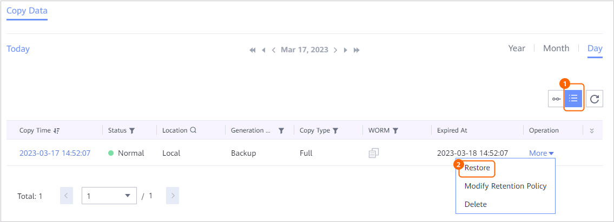

This section describes how to restore a GaussDB copy that has been backed up to the original or a new location.
Context
Backup, reverse replication, cascaded replication, archive, and replication copies can be used for restoration. GaussDB can be restored to the original location or a new location. Replication copies and their archive copies, cascaded replication copies and their archive copies cannot be used for restoration of GaussDB to the original location.
Prerequisites
- Before performing restoration, ensure that the database is in the normal state.
- Before performing restoration, ensure that backUpAgent has been started on the host where the client is installed. For details about how to start backUpAgent, see "Starting backUpAgent" in the OceanProtect DataBackup 1.5.0-1.6.0 Client Installation Guide.
- Before performing restoration, ensure that the original instance has been managed by TPOPS.
- When data is restored to a new location, ensure that the new instance exists and its deployment mode, shard quantity, version number, and transaction consistency are the same as those of the original instance.
- Point-in-time recovery (PITR) depends on the NTP clock. The clock source configurations must be the same among the nodes where the instances reside in the production environment.
- Before restoration, ensure that the space of the restoration target instance is greater than or equal to the size of the backup copy.
- Before restoration, ensure that the replica consistency protocol of the original instance is the same as that of the instance to which the restoration is performed.
- Before restoration, ensure that Allow Restoration has been enabled for the instance to be restored and the project to which the instance belongs. For details, see Managing GaussDB Projects and Restoring GaussDB Instances.
- Before performing cross-project/TPOPS instance restoration, you need to enable the whitelist. For details, see Enabling the gaussdb_feature_supportSyncBackupCrossSite_pcs-lite Whitelist.
- The platform and OS of the new database must be the same as those of the database to be backed up.

For details about the prerequisites for the production end, see "User Guide > Operation Guide > Data Restoration" in the Usage Guide of the corresponding GaussDB version.
Procedure
- Choose Explore > Copy Data > Databases > GaussDB.
For 1.5.0, choose Explore > Copy Data > Cloud Platforms > GaussDB.
- Search for copies by resource or copy. This section describes how to search for copies by resource.
On the Resources tab page, locate the instance to be restored by instance name and click the instance name.
- On the Copy Data page, select the year, month, and day in sequence to locate the copy.
If
 is displayed below a month or day, a copy is generated in the month or on the day.
is displayed below a month or day, a copy is generated in the month or on the day. - Find the copy to be restored and choose More > Restore on the right.
- Specify a copy or point in time for restoration.
- Specify a copy or any point in time between two copies for restoration.
- Specify a copy for restoration.

- Specify a point in time for restoration.

Data can be restored to a specific point in time in the blue part on the timeline.
 indicates that a copy exists at this point in time. You cannot specify a point in time for restoration if no backup log exists at the point in time.
indicates that a copy exists at this point in time. You cannot specify a point in time for restoration if no backup log exists at the point in time.
- Specify a copy for restoration.
- Restore data to the original location or a new location.
- Restore to the original location
Table 1 describes the related parameters.
- Restore to a new locationEnter Basic Information. Table 2 describes the basic parameters.
Table 2 Basic parameters Parameter
Description
TagNOTE:This function is available only in 1.6.0 and later versions.
This parameter is displayed when data is restored to a new location.
You can filter projects by tag.
Target Project
Fill in the project to be restored to the new location. Only the project where the instance associating with the copy is located can be selected as the target project.
Target Instance
Name of the instance to be restored to a new location.
NOTE:- During the restoration, the system deletes archive logs from the target location.
- Before restoration, ensure that the space of the restoration target instance is greater than or equal to the size of the backup copy.
- Data in the target location will be overwritten during restoration.
Version Verification
After this function is enabled, the version will be verified. This function applies only to cross-project restoration.
- Restore to the original location
- Click OK.
- Specify a copy or any point in time between two copies for restoration.
- Click OK.